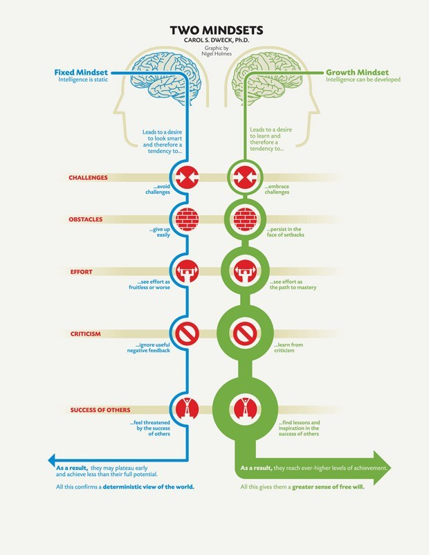

Being able to understand the principles of neuroplasticity benefits people because they are able to practice neuroplasticity. They are able to enhance their learning experience, develop a new range of cognitive abilities and in doing so develop new skill sets such as learning a language or instrument. People that develop an understanding of how neuroplasticity can change the way they approach learning. Those that have a growth mindset are able to more affectively take on difficult tasks and take on new challenges with greater success because they can approach a challenge with a "not yet" mentality. A "not yet" mentality means that if somebody is having difficulty with a paticular task, they are able to tell their 'inner-voice' that they are "not yet" able to complete the task, instead of telling themself that they are unable to complete the task.
I understand that the tasks that I am taking on are difficult. If I am not able to get a concept quickly, I can tell my self "I am not able to do this yet." This will prevent a situation where I give up on something because it is too difficult. Keeping the brain active in different skill sets can also help me learn. For example, if Javascript is doing my head in, I can change to doing some css for a bit then come back with a clean mind. The practice itself is valueable even though the result is not clear straight away. I have already noticed this when learning piano and increasing my typing speed.
Engage In different types of tasks. Such as practicing all skills I have learnt so far (css, html, JS ect). During breaks engage in different types of activities. Such as piano practice, walking dog, going for a ride ect.
Growth mindset is the mindset that allows somebody to take on tasks with a more optamistic approach to a challenge. Those that have a 'growth mindset' can see a difficult task can provide them with an exciting oppertunity to learn. Having a growth mindset is relevent and valueable to everything new you are attempting to learn. In my case it is relevent because I am learning new coding languages, learning to make websites and learning new human skills. Having a growth mindset is therefore an asset to my ability to getting through this course.
I had come across this theory before so nothing was suprising but it was good to be reminded that this applies to the dev academy course and that I sould be practicing having a growth mindset, not a fixed mindset.
I will apply a "not yet" mentality to anything that I am having trouble with. For example If I am trouble with a coding challenge, I will tell my self that I can not yet complete the task but "If I develop these skills I will be able to complete it"
I have already been practicing a growth mindset unknownly. Having learnt a second language and having learnt how to play instuments, I have practiced neuroplasticity. But I haven't yet related these activities until this research so having learnt what growth mindset actually means and what neuroplasticity is, I can now conciously be aware of the benifits of practicing these princibles are and in doing so, improve the way I learn.